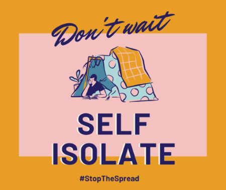
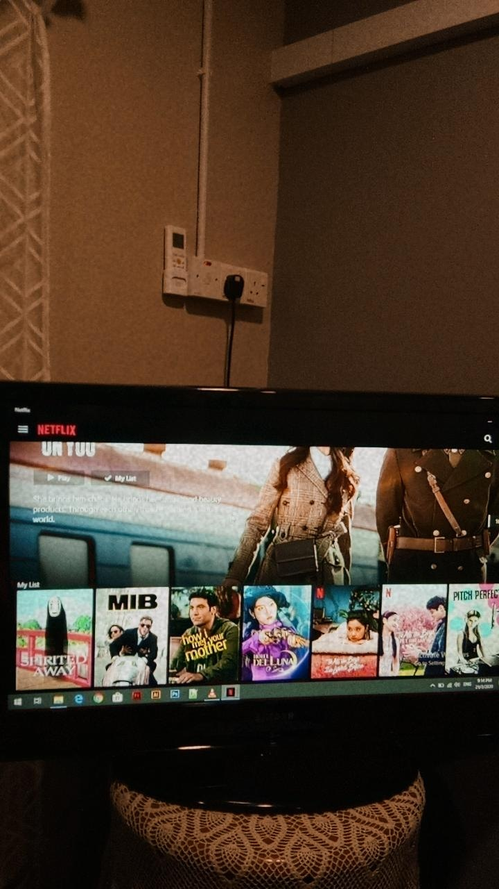
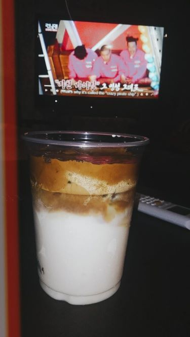
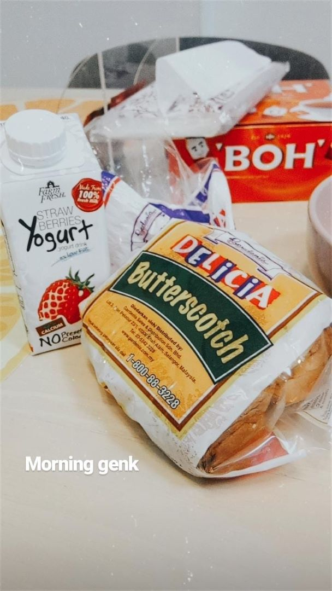
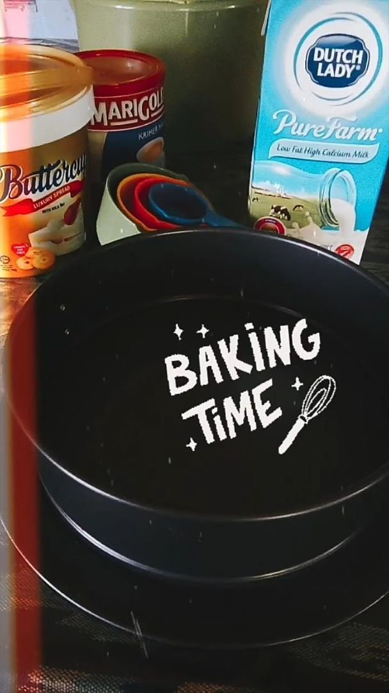
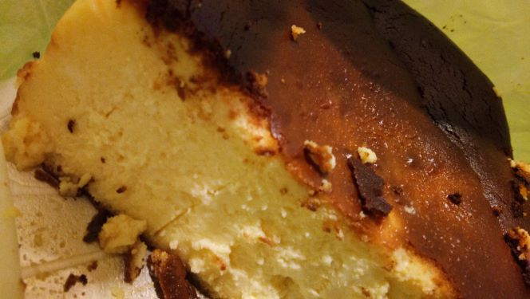
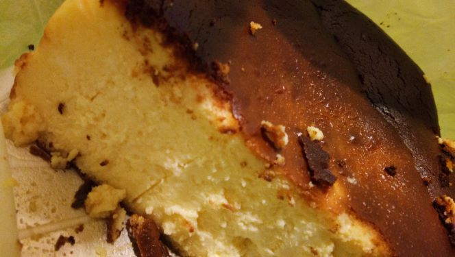

My Qurantine Days
During these uncountable days of Movevement Control Order, i have done few things to make my MCO activities spent well.
Netflix and chill!
Since i enjoy being away from school, i took this opportunity to binge watch my favourite show at Netflix.
Movie/ TV Show I have watched
| Hi Bye Mama! |
| Money Heist |
| Pandora |
| Grey's Anatomy |
| The Nanny |
Join the hype
Since everyone take a break from daily busy life, Dalgona Coffea currently trending and i am eagerly to join the hype too!
 Baking is my new passion!
It is a crustless cheesecake that is cooked at very high heat. This results in its rustic appearance with cracked edges and an almost burnt surface. The Japanese also have created a version of the basque cheesecake that has recently become very trendy because their version has a melty, lava-like custard center.
 
<

<